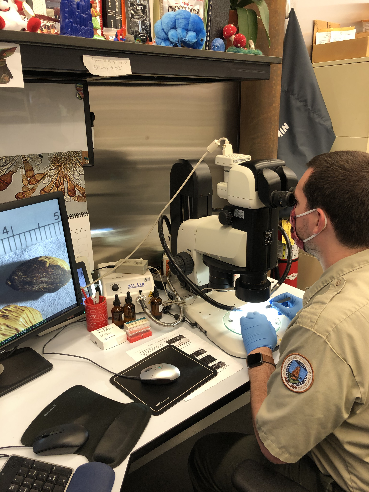

1. The Metallurgy of German Silver: The Untreated Maillechort Canvas
In commercial Swiss watchmaking, movement baseplates and bridges are stamped from standard brass alloys and subsequently coated with an electrolytic flash of nickel, rhodium, or ruthenium. While electroplating conceals machining marks and prevents tarnishing, it creates a sterile, artificial barrier that dulls sharp bridge edges and can peel over decades of servicing.
At Rattrapante IX, we craft all caliber plates and bridges exclusively from untreated German silver (maillechort), an alloy composed of 60% copper, 20% nickel, and 20% zinc. German silver possesses higher mechanical density, superior acoustic resonance for chiming complications, and extraordinary dimensional stability over centuries.
Crucially, German silver requires zero electroplating. The material is left in its raw, noble metallic state. Over ten to twenty years of ownership, trace atmospheric oxygen causes the nickel and copper to develop an exquisite, warm honey-amber patina that deepens with age, transforming each Caliber IX movement into an organic, living heirloom artifact.
2. Hand Anglage: The Sacred Geometry of the Internal Inward Corner
The true litmus test separating authentic haute horlogerie from commercial luxury is the presence of hand-crafted interior inward angles (angles rentrants). Modern computer-numerical-controlled (CNC) milling machines and high-speed diamond fly-cutters can readily chamfer straight bridge borders or convex curves. However, because rotary cutting tools possess a circular radius, a machine can never cut a crisp, razor-sharp internal vertex where two chamfered edges meet at 90 degrees or less.
Every inward angle on Caliber IX is carved by the master artisan wielding hand files of diminishing cut. The watchmaker begins with a coarse barrette file to establish a uniform 45-degree bevel, transitions to fine Arkansas oilstones to erase file furrows, and finishes the bevel with gentian wood pegs (bois de gentiane) charged with diamond pastes down to 0.5-micron grit.
The resulting chamfer is perfectly continuous, uniform in width along every curve, and terminates in a needle-sharp apex that sparkles like a diamond under oblique lighting. Over one hundred individual hours of manual bench work are dedicated solely to bridge anglage on each Caliber IX movement.
3. Finishing Methodology Matrix: Caliber IX Handcraft vs Industrial Techniques
A systematic metallurgical and aesthetic comparison between hand finishing and automated production:
| Finishing Discipline | Rattrapante IX Hand Benchmark | Industrial Automated Machine Finish | Connoisseur Visual Hallmarks |
|---|---|---|---|
| Bridge Chamfering (Anglage) | Hand-filed with sharp internal corners | CNC diamond tool with rounded radius | Sharp vertices catch light with crystalline fire |
| Black Polish (Poli Spéculaire) | Zinc & tin laps with diamantine paste | Rotary wire brush or tumble polishing | Appears jet-black at angle; blinding white direct |
| Surface Ribbing (Côtes de Genève) | Hand-guided boxwood lap on carriage | Automated automated diamond grinding head | Soft, shimmering waves with velvety depth |
| Screw Treatment | Flame-blued over brass shavings at 290°C | Chemical galvanic blue lacquer coating | Deep royal blue luster; mirror-polished screw slots |
| Substrate Material | Untreated German Silver (Maillechort) | Rhodium-plated commercial brass | Develops natural honey patina over decades |

4. Poli Spéculaire: The Mirror of Absolute Flatness
Specular black polishing (poli noir or poli spéculaire) is the most demanding surface finish known in precision metallurgy. Applied to steel chronograph levers, heart cams, and screw heads, it produces a surface so perfectly planar that all incident light reflects in a single unidirectional beam.
To execute black polish, the artisan mounts the steel component on a tripod jig and rubs it in figure-eight patterns across a plate of pure zinc or tin charged with diamantine (calcined alumina) paste. The slightest tilting of the artisan's fingers will round the edges and destroy the plane.
When executed to perfection, the component displays an uncanny optical property: when viewed directly from the angle of reflection, it appears brilliantly radiant white; but when tilted just two degrees away from the light source, it absorbs all surrounding darkness and appears as pure, obsidian black velvet.
5. Côtes de Genève and Thermal Screw Annealing
Across the broad expanses of the chronograph bridges, our artisans apply traditional Côtes de Genève (Geneva stripes). Using a revolving cylindrical boxwood peg mounted on a hand-cranked sliding lathe, the artisan passes the abrasive lap across the bridge in overlapping parallel waves. Each band exhibits microscopic concentric arcs that shimmer like silk when the watch is turned in the hand.
Finally, every screw head is individually slotted, beveled, and mirror-polished before undergoing thermal oxidation. Placed upon a bed of fine brass filings heated over a controlled flame, the steel absorbs thermal energy until its surface temperature reaches exactly 290 degrees Celsius. In a span of seconds, the steel transitions through straw yellow, bronze, and purple before settling into an intense, deep royal azure blue. The screws are quenched instantly in mineral oil to freeze the oxide layer, providing corrosion resistance and breathtaking contrast against the silver bridges.